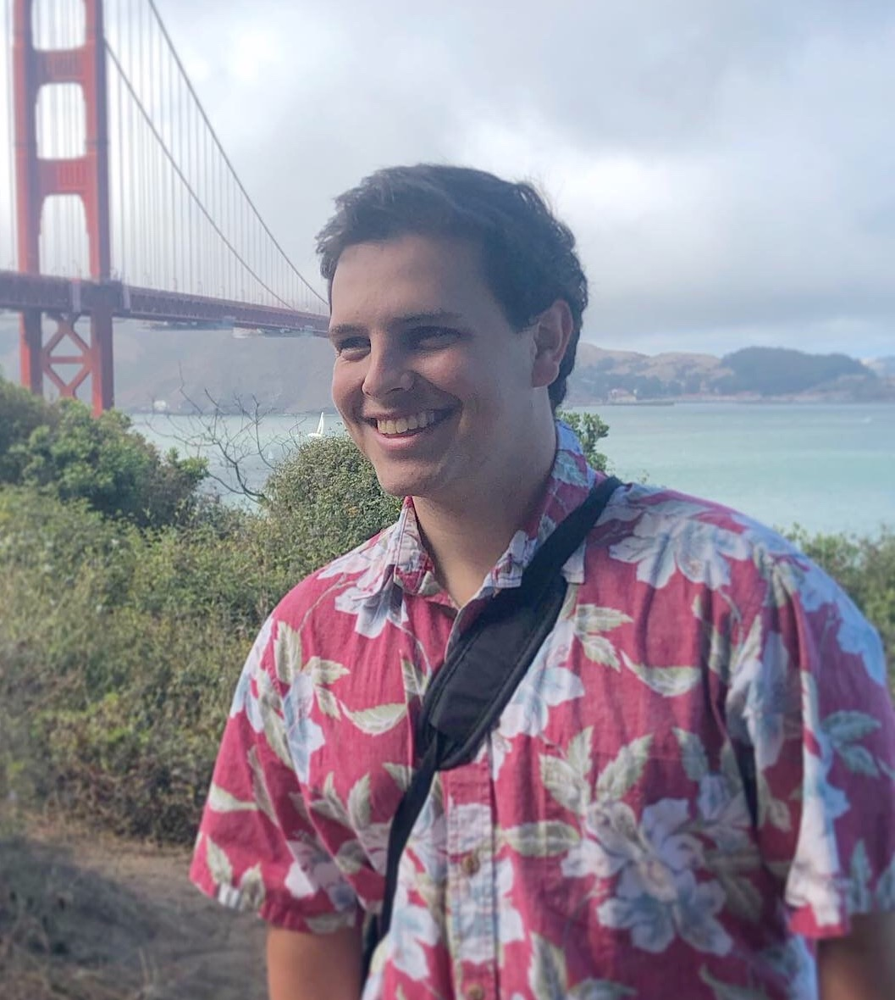

Hello there - welcome to my website!
My name is Chase Carnaroli and I am an aspiring Software Engineer currently studying Computer Science at the University of California, Irvine.
Back in middle school, after getting inspired by a "Learn to Code" campaign, I learned the basics of computer science
through Khan Academy's new computer programming course.
Once I got to high school, I took AP Computer Science where I had a fantastic teacher who not only gave me a great foundation for programming, but also helped me fall in love with the subject.
After taking that class, I knew that I wanted to major in Computer Science and become a software engineer.
Since then, I have published an iOS app, developed a handful of websites, written a bunch of Python scripts, and more - all of which can be seen on my Github!
Learning new languages and building new projects has now become a passion of mine.
I am now proficient in Python, C++, Swift, Java, SQL, and JavaScript.
When I’m not programming, I’m most likely spending time out in nature either hiking, hammocking, playing beach volleyball, or watching the sunset.